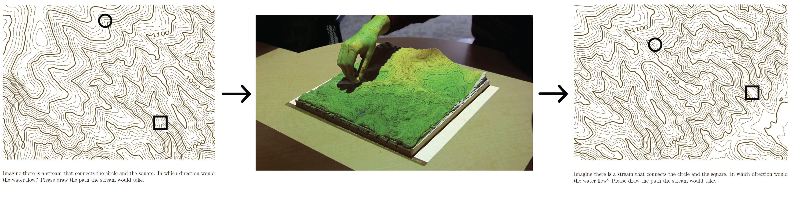
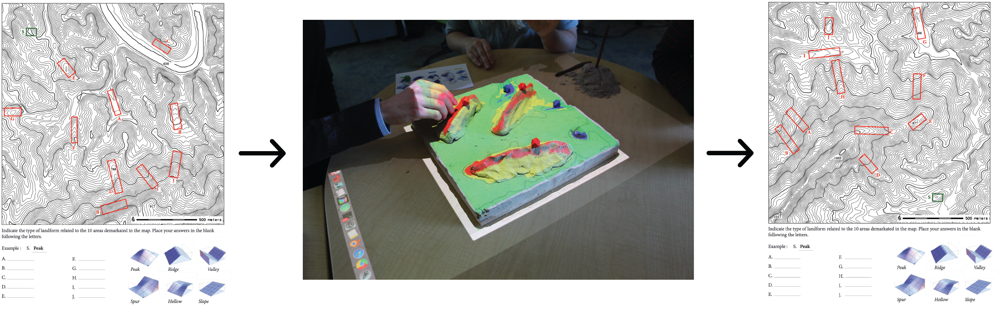
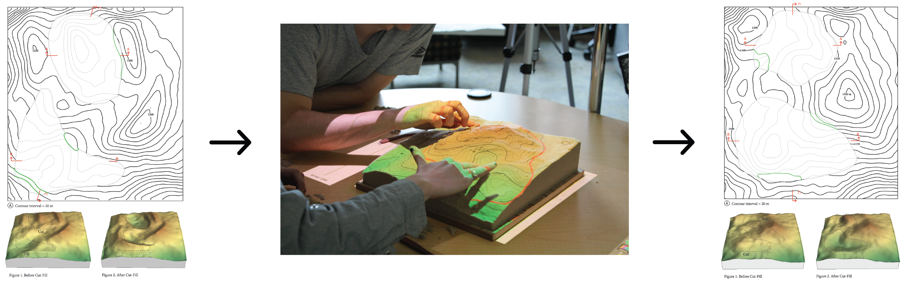
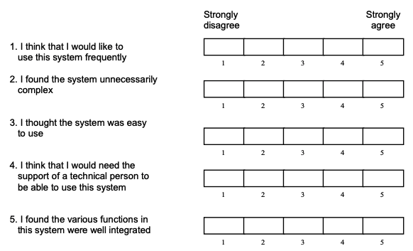
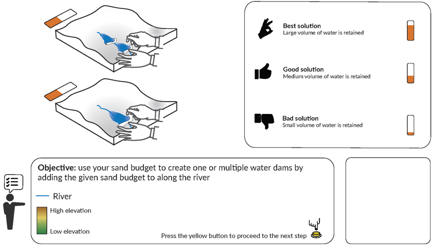
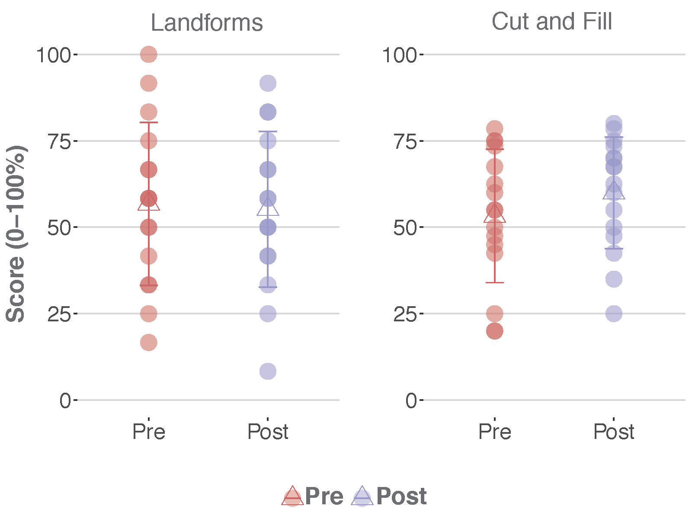

Maps & Minds: Geospatial Analytics for Studying Human Cognition
Garrett C. Millar
Preliminary Oral Examination
November 4th, 2020
 |
Helena Mitasova Committee Chair | Ross Meentemeyer Committee Member | Laura Tateosian Committee Member | Aaron Hipp Committee Member |
Background & Motivation

|

|

|

|
Maps & Minds: Geospatial Analytics for Studying Human Cognition
Completed Work
Ongoing & Proposed Work
Space-time Analytics of Human Physiology for Urban Planning
Chapter 1 Space-time Analytics of Human Physiology for Urban Planning
Background
- Research Objective: Use mobile sensing to improve the understanding of how people experience their environment.
- How?
- Combine location and wearable emotion data to inform urban design decisions.
- Use visual stimuli derived from viewsheds to provide more accurate environment interaction metrics.
- Develop web-based mapping system to explore complex human physiology data across urban landscapes.
Millar, G. C., Mitas, O., Boode, W., Hoeke, L., de Kruijf, J., Petrasova, A., & Mitasova, H. (2020). Space-time Analytics of Human Physiology for Urban Planning. Computers, Environment and Urban Systems, 85, 101554. https://doi.org/10.1016/j.compenvurbsys.2020.101554
Data & Methods
CHIPS: Cycle Highway Project
|
Data & Methods
Human Movement & Physiology

|
Data & Methods
Environmental Location

|
Data & Methods
Dynamic Visualization

Analysis
Environment Interaction Metrics
|
Analysis
Viewsheds

|
Results
| Descriptive Statistics | Multi-level Statistical Modeling | |
|
|
Importance & Contributions
- Presents novel approach for linking biosensing with location data to examine how the visible environment affects peoples' experiences.
- Developed methods are highly applicable to other use cases.
- First of its kind dynamic visualization tool.
Chapter 1 Space-time Analytics of Human Physiology for Urban Planning
Publications
https://doi.org/10.1016/j.compenvurbsys.2020.101554
Software & Applications
Tangible landscape: A hands-on method for teaching terrain analysis
Chapter 2 Tangible Landscape: A Hands-on Method for Teaching Terrain Analysis
Background
- Research Objective: Test the effectiveness of a hands-on method for teaching spatial concepts using Tangible Landscape.
- How?
- Test students’ acquisition & transfer of knowledge.
- Examine students’ ratings of the system’s usability & user experience.
Millar, G. C., Tabrizian, P., Petrasova, A., Petras, V., Harmon, B., Mitasova, H., & Meetenmeyer, R. K. (2018).
Tangible landscape: A hands-on method for teaching terrain analysis. In Proceedings of the 2018 chi conference on human factors incomputing systems (pp. 380:1–380:12)., New York, NY, USA: ACM.
[Winner of the Honorable Mention for Best Paper Award].
https://doi.org/10.1145/3173574.3173954.
Methods
Interaction, Feedback, & Example Solutions

Evaluation Materials
Assessed students’ acquisition & |
 |
Measured student’s knowledge specific |  |
Measured student’s knowledge specific |  |
Results & Importance
- Tangible Landscape supports both improved user experience as well as marginal, task-specific knowledge building.
- Several implications for the design and implementation of tangible teaching methods for learning about Landscape Architecture (and other topics).
Acknowledgements - Software design & development: Drs. Anna Petrasova, Vaclav Petras, Payam Tabrizian, and Brendan Harmon
- Study implementation: Carla Delcambre of the Landscape Architecture department and her Grading and Drainage course at North Carolina State University
Chapter 2 Tangible landscape: A hands-on method for teaching terrain analysis
Publications
Related Work
Software & Applications
Usability Evaluation of Web-Based SDSS for Collaborative Management of Biological Invasions
Chapter 3 Usability Evaluation of Web-Based SDSS for Collaborative Management of Biological Invasions
Background
- Research Objective: Investigate and discover how web-based SDSS can better support collaborative ecological decision-making.
- How?
- Conduct HCI experiment to investigate information acquisition patterns of decision-making groups.
- Collect user metrics to investigate and standardize constructs of system suitability for web collaboration contexts.
Methods
Experimental Design
Methods
Setting & Apparatus
Pest or Pathogen Spread Web Platform (PoPS)
Methods
Disease Scenarios
|
|
Methods
Disease Scenarios
|
Data & Methods
Evaluation
| System Usabilty Scale | Semi-structured Interview | |
|  |  |
Data & Methods
Proposed Analysis
- Prediction: Participants in collaboration group will engage in more effective and accurate decision making.
- Analyses:
- T-test examining differences between collaboration and individual groups on overall disease management task performance.
- Analyses:
- Prediction: Higher usability and user experience ratings with higher disease management task performance.
- Analyses:
- Pearson product-moment correlation
- Regression using collaboration type as predictor variable and ratings of usability and user experience as outcome.
Importance & Contributions
- Identification of user experience and usability constructs of SDSS use within the overarching problem space of environmental problem solving.
- First to use HCI principles to improve SDSS.
- General usability framework that can be applied and used for multiple use cases .
Chapter 3 Usability Evaluation of Web-Based SDSS for Collaborative Management of Biological Invasions
Related Work
Related Software & Applications
Related Presentations
|
|
|
||
|
|
|
|
|
(put in Harvard presentations)
Timeline
| Fall 2020 | Spring 2020 |
|---|---|
|
|
Presentation Link: gcmillar.github.io/presentations/prelim_presentation
Extra Slides
Other work Increasing Underrepresented High School Students’ STEM Career Awareness and Interest: An Informal Geospatial Science Program
- Research Objective: Develop activities with Tangible Landscape and other related curricula lessons to increase underrepresented high school students' spatial thinking and interest in GIS (STEM)
- Lead evaluative procedures for:
- Improving student competence in science
- Nurturing student enthusiasm for science
- Interesting students in research or other science-related careers
Developed Activities
| Water Flow |

|
Trail Planning |

|
| Landforms |

|
Channeling |

|
| Cut & Fill |

|
Ponding |  |
See Developed TL Activity Website: gcmillar.github.io/Tangible-Landscape-Activities-GAPS/index.html
Results & Contributions
- Goal 1: Improving student competence in science
- Average 3.39 (out of 4) on being able to explain background material during project presentations
- Goal 2: Nurturing student enthusiasm for science
- 56% of participants indicated an increased interest in learning science
- Goal 3: Interesting students in research or other science-related careers
- 80% of parents stated their child gained skills to use in a STEM career
- Program facilitation: Drs. Eric Money, Kyle Bunds, Helena Mitasova
- Millar, G. C., Money, E.S., Bunds, K.S., Mitasova, H., & Meetenmeyer, R. K. (2018). Increasing Underrepresented High School Students' STEM Career Awareness and Interest: An Informal Geospatial Science Program American Geophysical Union, Fall Meeting 2018, December 12, 2018.
User Experience Survey
(Ras et al., 2012)
- Examined how students perceived and interacted with Tangible Landscape, & how they collaborated to solve a problem
- Constructs:
- Performance expectancy
- Pragmatic quality:
- physical objects (wooden carving tools, physical landscape model)
- visual objects (projection, digital feedback)
- Effort expectancy
- User experience
Results
Knowledge Building: Tangible Lessons

| Individual Scores | Mean Scores |
Results
Knowledge Building: TMA


| Individual Scores | Mean Scores |
Results
User Experience
- All items rated above the neutral value of 4 (out of 7)
- Most advantageous aspects of Tangible Landscape?
- ability to explore various solutions for the given problems (e.g., water flow, landforms, cut and fill)
- physical objects allowed students to change parameters (e.g., location of solution points) very quickly
- projected visual feedback helped them better understand the effects of changing those parameters